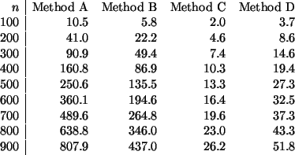

Next: Optimal Sorting
Up: Sorting
Previous: Timing the Algorithm
Contents
Index
Each type of sort was given a set of M randomly chosen lists of
integers (
0 k16383) for the shown lengths n. The sorts were
timed (in centiseconds per sort) using the following methods and
numbers of lists.
k16383) for the shown lengths n. The sorts were
timed (in centiseconds per sort) using the following methods and
numbers of lists.
|
Label | Method | M |
|
A | Minimum Element Sort | 200 |
|
B | Insertion Sort | 500 |
|
C | Quicksort | 500 |
|
D | Mergesort | 500
|
The timings are given in Table 2.3.
Table 2.3:
A comparison of sort times using different sorting methods.
|  |
Empirical Formulas for the data in Table 2.3 are as
follows, where T is in centiseconds:
|
A) |
T(n) 0.001n2 |
|
B) |
T(n) 0.00054n2 |
|
C) |
T(n) 0.00043n ln n |
|
D) |
T(n) 0.00083n ln n |
These data confirm the theoretical analysis of the order of the
timing, and also give some idea of the size of the contants of
proportionality.
Next: Optimal Sorting
Up: Sorting
Previous: Timing the Algorithm
Contents
Index
Ian Craw
2001-04-27